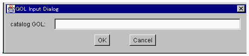

カタログサーバにアプリケーションをエクスポートする
構築したアプリケーションをプログラマ間で共用するために、OZシステムはカタログサーバを持っています。プログラマはカタログサーバからサブジェクトをインポートして利用することができます。また、構築したアプリケーションをカタログサーバにエクスポートすることができます。サブジェクトとはアプリケーション、クラスライブラリの配布可能単位です。ランチャによって生成、活性化したいアプリケーションは、通常の「カタログサーバにサブジェクトをエクスポートする」機能ではなく、この機能を利用してカタログサーバに登録してください。

- <カタログサーバへのエクスポートを行う事前条件>
- カタログサーバへの登録はサブジェクト単位です。カタログサーバへのエクスポートを行う前に、該当サブジェクトのリリース用コンパイルを行ってください。
- ＜エクスポート＞
- １．スクールブラウザのSubject:メニューリストからエクスポートする Subject
を選択してください。

- ２．スクールブラウザのラジオボタンを for Release に設定します。
- ３．Catalog メニューの resister application ... を選択してください。
- アプリケーションカタログブラウザが開かれます。
- このメニュー項目選択が初回の場合には、カタログサーバのGOLの入力を求めるダイアログも表示されます。

- カタログサーバのGOLをキー入力し OK ボタンをクリックすると、カタログブラウザにそのサーバに登録されたカタログがリストされます。
初回以降は、前回ブラウズしていたカタログサーバがデフォルトとして設定されています。
このウィンドウ、ダイアログとともに、アプリケーションのコメントを書き込むためのウィンドウが開かれます。
- ４．name にアプリケーションの名前（任意の文字列です）、description
にアプリケーションのサービスが明示的にわかるようなコメントを記述します。そして、Systemメニューから
export メニュー項目を選択すると、アプリケーションカタログブラウザにそのカタログが登録されます。
(c) 1996-1998 IPA, ETL, AT21, FSIABC, FXIS,
InArc, MRI, NUL, SBC, Sharp, TEC, TIS. All rights reserved.